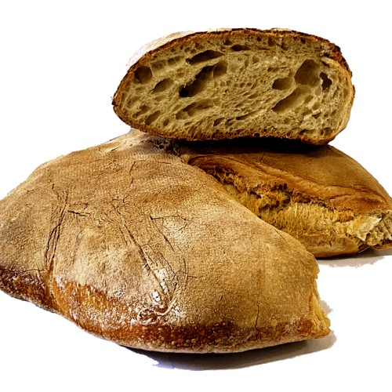
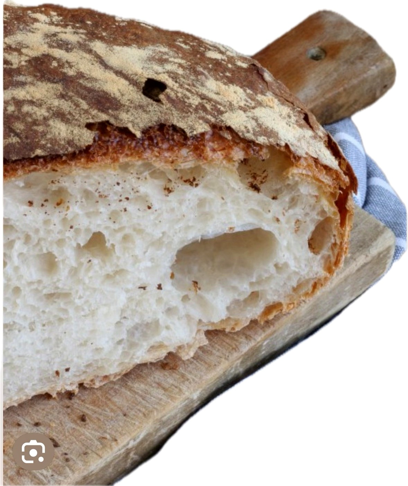

Con il ragù
Perfetto per raccogliere il sugo delle polpette e dei piatti napoletani.
Fatto ogni giorno a Las Galletas
Preparato da noi con lievito di birra e cotto nel forno elettrico: crosta croccante, mollica soffice e il gusto autentico del pane napoletano.

La nostra lavorazione
Da El Capricho Rosticceria Napoletana prepariamo quotidianamente il pane cafone nel nostro laboratorio di Las Galletas. Utilizziamo lievito di birra, curiamo l’impasto e lo cuociamo nel forno elettrico fino a ottenere una crosta dorata, fragrante e croccante.
La mollica resta soffice e ben alveolata. Il risultato è un pane rustico, saporito e versatile, pensato per accompagnare la vera cucina napoletana anche qui, nel sud di Tenerife.


Come gustarlo
Lo consigliamo con tutti i nostri piatti e lo utilizziamo anche nella preparazione delle polpette, perché consistenza e sapore sono perfetti per la ricetta tradizionale.
Perfetto per raccogliere il sugo delle polpette e dei piatti napoletani.
La crosta fragrante accompagna al meglio sapori rustici e intensi.
Ottimo con parmigiana, verdure, salumi, formaggi e mozzarella.
Il pane viene preparato quotidianamente, ma può terminare. Scrivici su WhatsApp per prenotarlo intero o a metà.
Dove trovarci
Ci trovi da El Capricho Rosticceria Napoletana, in Avenida Fernando Salazar González 13A, Las Galletas, Tenerife.
È disponibile intero oppure a metà. Per disponibilità e prenotazioni puoi chiamarci o contattarci su WhatsApp.
Pan napolitano artesanal preparado cada día en Las Galletas, Tenerife. Corteza crujiente, miga suave y auténtico sabor de Nápoles. Disponible entero o por mitad.
Sì, lo prepariamo quotidianamente nel nostro laboratorio a Las Galletas.
Il peso indicativo è di circa 600–700 grammi.
Sì, è disponibile sia intero sia a metà.
Il prezzo del pane intero è di 3,00 €. Per il formato a metà chiedi il prezzo aggiornato in negozio.
No, il nostro pane cafone è preparato con lievito di birra.